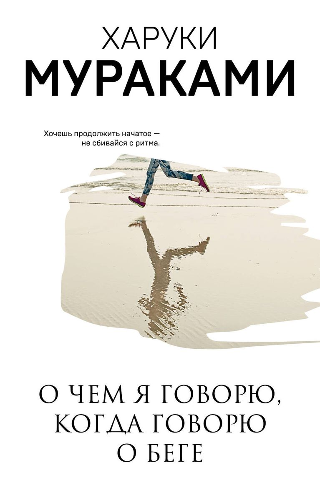
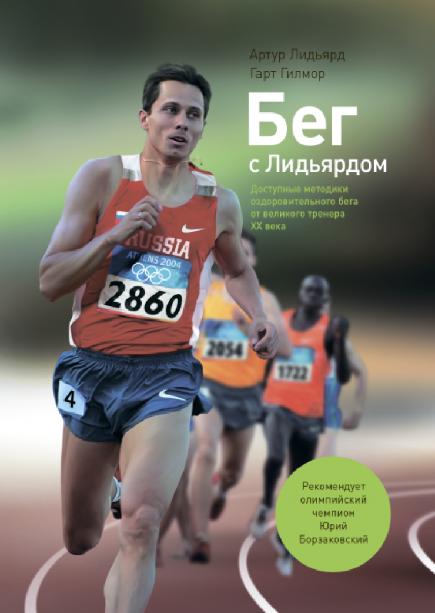
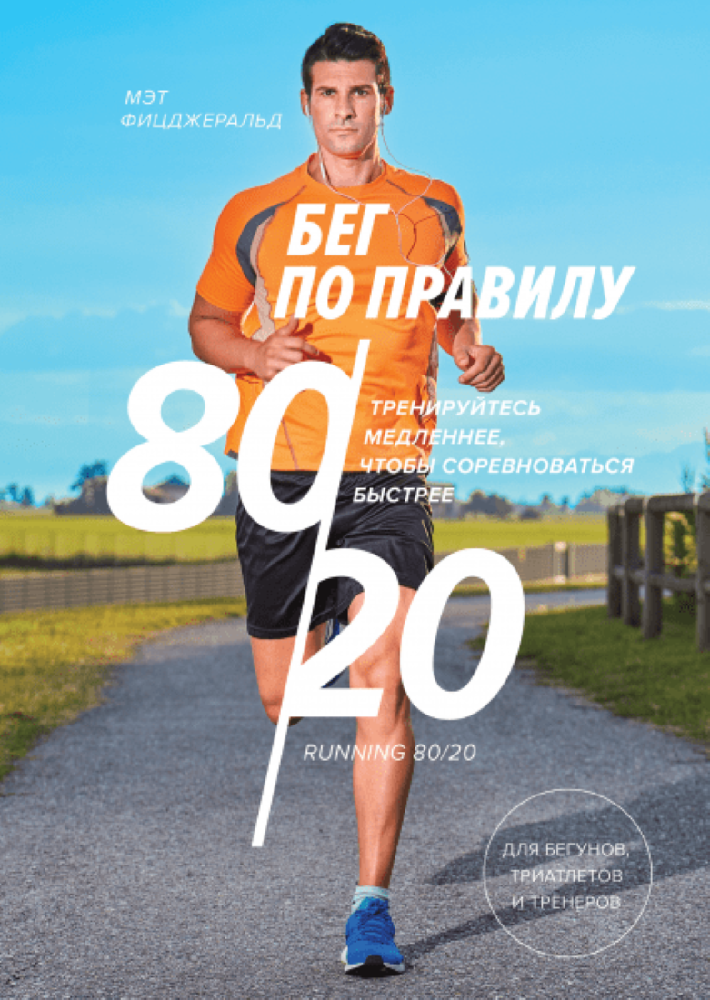
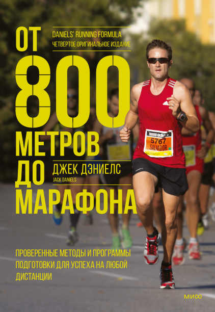
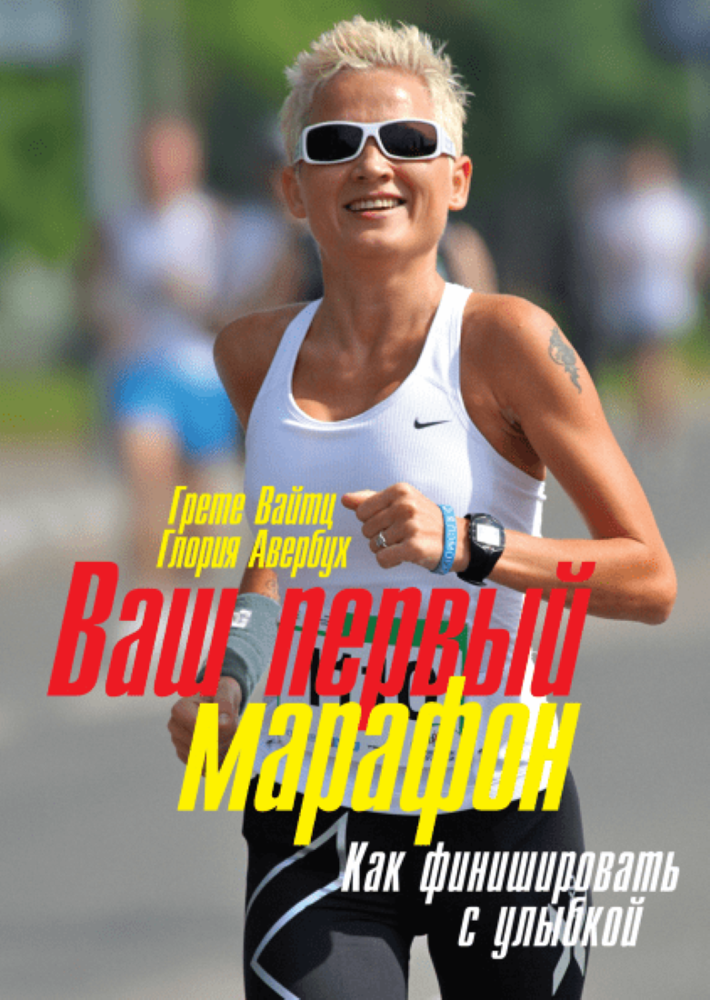
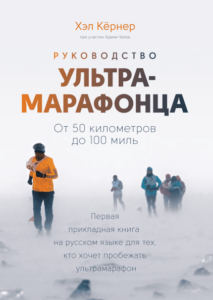

Друзья! В этой статье подборка книг о беге, которые вдохновят вас на новые достижения.
В этом списке книг о беге каждый найдёт произведение по душе, будь то мотивационные истории из жизни или теоретический научный труд:

"О чем я говорю, когда говорю о беге"
Мураками Харуки
Книга самого знаменитого мастера современной японской литературы, собрание, по его словам, "зарисовок о беге, но никак не секретов здорового образа жизни". С той же фирменной легкостью и недосказанностью, виртуозно балансируя на грани бытового очерка и аллегории, Мураками фиксирует свои размышления о беге, приобретающем в силу ежедневного повторения "некую медитативную сущность". "Искренне писать о беге, - говорит он, означает искренне писать о самом себе".

"Бег с Лидьярдом. Доступные методики оздоровительного бега от великого тренера XX века"
Артур Лидьярд и Гарт Гилмор
О том, как правильно бегать, сохраняя и приумножая свое здоровье. В этой книге изложена философия бега трусцой так, как ее понимает сам Артур Лидьярд. Из нее вы узнаете, зачем бегать и как именно это нужно делать, как затормозить процессы старения, каковы примерные программы тренировок и принципы правильного питания. А заодно ознакомитесь с историей зарождения этого вида спорта и результатами исследований. Эта книга для тех, кто хочет не терять спортивную форму или восстановить ее, для тех, кто хочет оставаться здоровым вне зависимости от возраста.

"Бег по правилу 80/20. Тренируйтесь медленнее, чтобы соревноваться быстрее"
Мэт Фицджеральд
Большинство бегунов-любителей тренируются неправильно. Мэт Фицджеральд показывает, как тренируются элитные бегуны, почему они делают так и почему нужно тренироваться медленнее, чтобы соревноваться быстрее. Хотя это может казаться противоречивым, чтобы стать более быстрым бегуном, нужно бегать медленно большую часть времени. Ключевое отличие между бегунами, которые реализовали свой потенциал, и теми, кто не сделал этого - объемы медленного бега. Современные исследования лучших бегунов в мире - первые исследования, в рамках которых был доступ к реальной информации о том, как тренируются такие атлеты - показали, что они проводят примерно 80% своего тренировочного времени с интенсивностью ниже дыхательного порога, то есть бегают в темпе, позволяющем вести разговор. Новые исследования также показали, что любители, участвующие в соревнованиях, прогрессируют быстрее всего, когда тренируются в основном легко. Бег по правилу 80/20 - это подход к тренировочному процессу, который кратко можно описать так: 80 процентов тренировочного времени нужно бегать с легкой интенсивностью, а оставшиеся 20 - со средней и высокой. Мэт Фицджеральд приводит убедительные доказательства того, что такой подход работает, и предлагает практические рекомендации, с помощью которых вы сможете придерживаться правила 80/20 и составлять свое тренировочное расписание. Эта книга для бегунов любого уровня и тренеров, для триатлетов, пловцов, велосипедистов.

"От 800 метров до марафона. Проверенные методы и программы подготовки для успеха на любой дистанции"
Джек Дэниелс
Полностью переработанное издание книги одного из лучших в мире тренеров по бегу. Основана на научных исследованиях и более чем 55-летнем тренерском опыте автора. Содержит подробные программы подготовки к забегам на разные дистанции, а также отдельные главы об ультрамарафонах и триатлоне. Джека Дэниелса называют лучшим в мире тренером по бегу. Его книга “От 800 метров до марафона” стала современной классикой среди спортсменов как на Западе, так и в России. В основе книги - исследования результатов лучших бегунов мира, данные научных лабораторий и многолетний тренерский опыт автора. Книга освещает множество вопросов: базовые принципы тренировки, физиология бега, способы измерения спортивной формы и интенсивности тренировок, ведение учета уровня нагрузок при разных типах тренировок, отношение к отдыху как к части тренировочного процесса, тренировки на беговой дорожке и многое другое. Под обложкой представлены подробные программы подготовки для дистанций от 800 метров до марафона, адаптированные для бегунов разных уровней. Благодаря им вы сможете составить план тренировок на сезон, распределив нагрузку по неделям и дням, а затем отслеживать прогресс по балльной системе Дэниелса. Эта книга для тех, кто только приступает к занятиям бегом и хочет понять физику процесса и методологию подготовки, для более опытных атлетов, стремящихся улучшить свои результаты в беге на средние и длинные дистанции, для тренеров, которые хотят улучшить показатели своих подопечных.

"Ваш первый марафон. Как финишировать с улыбкой"
Грете Вайтц и Глория Авербух
Эта книга не для спортсменов-марафонцев. Она для тех, кто ищет новую цель и новые эмоции. У тех, кто хочет пробежать свой первый марафон, очень разные причины на это. Кто-то потерял вкус к жизни, а кто-то, наоборот, цепляется за жизнь. Кто-то ищет источник моральных сил, переживая сложную жизненную ситуацию, а кто-то, бегает просто от избытка энергии. Конечно, на первом марафоне не слишком важно, сколько времени у вас ушло на то, чтобы его завершить, важен сам факт финиша. И в этой книге нет рекомендаций относительно скорости. Она учит другому - радости бега. С ней вы сможете подготовиться к марафону, не отдалившись от семейного и дружеского круга, и пробежать его, не слишком устав. И совершенно неважны ваш возраст, комплекция, исходная степень тренированности. Но важно иметь мечту пробежать марафон и относительное здоровье. Остальное сделают регулярные тренировки и самоконтроль. В книге есть 16-недельная программа для начинающих бегунов, упражнения на общефизическую подготовку и растяжку, советы по питанию в период подготовки и на дистанции. Вы одолеете сначала 10 километров, затем полумарафон и, наконец, покорите вершину, к которой стремились, - марафонскую дистанцию. Эта книга для тех, кто мечтает пробежать марафон.

"Бег по шоссе для серьезных бегунов"
Фитзингер Пит
В книге содержатся планы подготовки к различным дистанциям, описываются принципы подготовки к этим дистанциям, даются советы по соревновательной тактике и психологическому настрою, а также приводятся примеры тренировок бегунов мирового класса. Независимо от того, на какой дистанции вы планируете выступать, Бег по шоссе для серьезных бегунов поможет вам подойти к решающим соревнованиям на пике спортивной формы.

"Руководство ультрамарафонца. От 50 километров до 100 миль"
Хэл Кернер и Адам Чейз
Все, что вам нужно знать, чтобы преодолеть первый ультрамарафон или поставить личный рекорд в беге на 100 миль, - из уст победителя легендарных забегов Western States и Hardrock 100. Во время ультрамарафонов у вас нет права на промах, так что учиться на собственных ошибках не стоит. Готовьтесь по этому подробному руководству, написанному одним из сильнейших современных ультрамарафонцев, двукратным победителем забега Western States. Хэл Кернер делится своим опытом, чтобы помочь вам пробежать любой ультрамарафон - от 50 километров до 100 миль и даже больше. Из книги вы узнаете обо всем, что необходимо для подготовки к гонке: как выбирать инвентарь - от носков до треккинговых палок и питьевых систем, как питаться и пить во время гонок и тренировок, как выбрать забег, как бегать по пересеченной местности, что делать, если вам понадобится первая помощь, как справляться с высотой, жарой, ветром и другими трудностями, для чего нужны пейсмейкеры и команда поддержки и как их подготовить, как спланировать гонку и держать темп, какие стратегии использовать, чтобы выдержать тяжелое ментальное испытание, как проводить тренировки при подготовке к гонке. В книге есть три тренировочных плана - для ультрамарафонов на дистанциях 50 километров, 50 и 100 миль, - список из “10 вещей, которые стоит и не стоит делать в день гонки”, и огромное количество советов, проверенных на практике. Эта книга для тех, кто хочет больше узнать об ультрамарафонах, для тех, кто готовится к первому ультрамарафону и хочет больше узнать о питании, подготовке, экипировке, профилактике травм и остальных нюансах, для ультрамарафонцев, которые хотят улучшить свои результаты или замахнуться на большую дистанцию.
"Ультра. Как изменить свою жизнь в 40 лет и стать одним из лучших атлетов планеты"
Рич Ролл
Подлинная и невероятная история преображения автора из 40-летнего алкоголика в одного из лучших атлетов мира. К сорока годам Рич Ролл был в ужасной форме. Его дни состояли из работы, стрессов и фастфуда. А ночи он проводил на диване с пультом в руке. Самое сложное спортивное упражнение заключалось в выносе мусора, а 22 лишних килограмма превращали подъём по лестнице в испытание. Рич понял, что пора меняться. Он занялся детоксом, перешел на растительную пищу и стал все больше и больше заниматься спортом. Спустя время журнал Men’s Fitness признал Рича одним из 25 сильнейших мужчин мира. Он прошел многие ультрагонки, включая соревнование “Epic 5” - 5 дистанций “Ironman” за неделю на Гавайях - испытание, которое многие называли невозможным. Эта книга - история его полного физического и духовного преображения, доказывающая, что любой может стать “ультра”. Эта книга для всех, кто любит мотивирующие истории о спорте и силе духа, для бегунов, мечтающих пробежать ультрамарафон.
"Бегущий без сна. Откровения ультрамарафонца"
Дин Карназес
Яркая автобиографическая книга легендарного ультрамарафонца Дина Карназеса. Ультрамарафонец Дин Карназес, пробежавший 50 марафонов за 50 дней в 50 штатах (350 миль без сна), участвовавший в забеге на Южном Полюсе и победивший в легендарном испытании “Бэдуотер” (217 километров по Долине Смерти при температуре чуть ниже 50°), в своей книге отвечает на вопросы, которые ему постоянно задают: Почему ты это делаешь? Как ты это делаешь? Ты сумасшедший? В новом издании он вдобавок ответил на несколько более практичных вопросов, которые интересовали его читателей: Чем именно ты питаешься? Как ты тренируешься? Эта книга стала международным бестселлером и вдохновила тысячи людей - от тех, кто совсем сторонился спорта, и до продвинутых бегунов-любителей. Эта книга для всех, кто любит мотивирующие истории о спорте и силе духа, для ультрамарафонцев и всех, кто только думает о сверхмарафонской дистанции.
"Ешь правильно, беги быстро. Правила жизни сверхмарафонца"
Скотт Джурек и Стив Фридман
Скотт Джурек — сверхмарафонец, то есть соревнуется на дистанциях больше марафонских, вплоть до 200-мильных. К этому спорту приходят не вдруг. Это вообще, можно сказать, не спорт, а философия, восприятие мира и себя в нем. Философию Джурека можно кратко сформулировать как “не вреди природе, живи в гармонии с ней и постоянно стремись к большему”. И вы почувствуете это в каждой строчке его автобиографии. Эта книга - необыкновенное повествование о его жизни, шаг за шагом подводившей Скотта ко все более сложным испытаниям - с детских лет и до сегодняшнего дня. Это изложение ментальной картины мира сверхмарафонца, для которого бег - образ жизни. Невозможно проводить столько времени в движении, не имея внутреннего стержня - жить именно так. Это советы по технике бега и организации тренировок, которые будут полезны тем, кто занимается бегом на длинные дистанции. Это система питания. Удивительно, но Скотт при своих огромных нагрузках - веган, то есть питается только натуральными продуктами исключительно растительного происхождения. Как можно понять, его веганство не имеет отношения к простой моде на вегетарианство: он сам врач и внимательно следит за своим самочувствием и результатами, которые улучшились после исключения из рациона животных продуктов. Это очень цельная и сильная книга, которая выходит за рамки беговой темы. Это книга о пути к себе. Для тех, кто сам увлечен бегом на длинные дистанции. Эта книга для тех, кто хочет понять, что движет “сверхчеловеками”, бегущими сотни километров в немыслимых условиях тяжелейших гонок, для тех, кому нужно “дотянуться до неба” и что-то изменить в себе.
"Нет ничего невозможного. Путь к вершине"
Килиан Жорнет
Жизнь Килиана Жорнета, известного каталонского спортсмена, неразрывно связана с горами. Уже в пять лет он с родителями совершил восхождение на два самых высоких пика Пиренеев - Ането и Посетс, - а к десяти годам покорил все вершины в Пиренеях. Сейчас Килиан - чемпион мира по скайраннингу, трехкратный чемпион UTMB (ультратрейла вокруг Монблана) и чемпион мира по ски-альпинизму, ему принадлежат несколько рекордов в разных видах горного спорта. В тридцать лет Килиан поставил себе новые цели, в том числе в скалолазании, и реализовал грандиозный проект “Вершины моей жизни”, в рамках которого удивил мир легендарным двойным восхождением на Эверест без кислорода. Жорнет не раз испытывал границы человеческой выносливости: многое до него казалось просто невозможным. И это не случайность и не везение: он с детства тренировал тело и ум. Покорив главную вершину мира (и ряд других), Килиан Жорнет делится своими мыслями в этой книге. Она о верности мечте, о свободе, о любви к горам, о друзьях и наставниках. И о том, что сам путь, сложный и опасный, важнее покорения вершины. Эта книга для марафонцев, сверхмарафонцев, триатлетов, их тренеров, спортивных врачей и психологов, для всех, увлеченных бегом, для всех, кто интересуется сверхвозможностями человека.
"Как сильно ты этого хочешь?"
Мэт Фицджеральд
Великолепная книга по спортивной психологии, от которой вы не сможете оторваться. Построена на историях элитных спортсменов, их ошибках и уроках. Будет интересна и полезна всем - и спортсменам-любителям, и тем, кто не занимается спортом на результат. Величайшие достижения в спорте случаются благодаря мозгу, а не телу. С этой книгой вы окунетесь в перипетии дюжины великих соревнований, чтобы узнать ответ на самый важный вопрос в видах спорта на выносливость: “Как сильно ты этого хочешь?” В своей книге Мэт Фицджеральд - один из самых ярких авторов современности, пишущих на тему спорта, - сумел создать впечатляющую подборку примеров из реальной жизни, демонстрирующих, как восприятие усилий и прочие психологические факторы влияют на нашу выносливость. Эти примеры из жизни великих атлетов, представляющих самые разные виды спорта, искусно вплетаются в данные свежих научных исследований. Результат получился выдающимся: книгу можно читать как спортивную биографию, но в то же время получить представление о том, как повысить выносливость, сделавшись собственным “спортивным психологом”. Эта книга для всех, кто интересуется психологией в целом и психологией спорта в частности, для тех, кому интересны подлинные истории из жизни спортсменов высочайшего уровня, для спортсменов и тренеров.
"Притяжение сверхмарафона. Психология, питание и подготовка"
Максим Воробьев
Мастер спорта международного класса в сверхмарафоне делится своим опытом и знаниями, дает начинающим и опытным сверхмарафонцам рекомендации по питанию, экипировке, психологии, тренировочному процессу, рассказывает о ярких (и не всегда известных широкой аудитории) победах советских и российских бегунов на высшем уровне, предлагает тренировочные планы на основные дистанции по трем уровням - от новичка до профессионала. Эта книга для всех, кто хочет пробежать ультрамарафон. Книга будет интересна и профессиональным спортсменам, много лет отдавшим сверхмарафону, и новичкам.
"Не про бег"
Юрий Строфилов
Во время бега отлично думается. Адреналин заставляет размышлять быстро, дофамин накидывает варианты и обостряет интуицию, серотонин расширяет сознание, а норадреналин подталкивает к принятию решений. Неспешный бег очень похож на легкий сон с видениями, снами, воспоминаниями. Вам остается только чуть-чуть направлять ваши мысли. Так марафонцы становятся поэтами. Юрий Строфилов начал бегать в 50 лет, а впоследствии занял первое место среди россиян на марафоне в Нью-Йорке и пробежал эту дистанцию в Берлине в 2017 году за 2:47. В конце 2018 года он пробежал шестой из шести крупнейших марафонов мира (”мейджоров”) и собрал все свои впечатления, опыт, ошибки и уроки в книге. А также поделился мнением о технике бега, силе воли, питании и многих других вопросах. Эта книга не про бег. Она про жизнь. Про то, как научиться не ждать своего счастья, как получать удовольствие прямо во время пробежек. Это причудливый калейдоскоп воспоминаний о подготовке к марафонам и об участии в них, реальных историй и философских сказок, притч и размышлений автора. Это вихрь, который позволяет увидеть бег изнутри и полюбить его или, по крайней мере, понять его даже тем, кто никогда не бегал. Эта книга для тех, кто хочет понять, в чем заключается магия бега (продвинутые бегуны, начинающие джоггеры, люди с избыточным весом, путешественники, изучающие собственный организм, ищущие мотивацию для поддержания себя в тонусе, готовящиеся к первой беговой десятке или к сотому марафону).
"Питание в спорте на выносливость. Все, что нужно знать бегуну, пловцу, велосипедисту и триатлету"
Моник Райан
Подробное, научное, доступное и структурированное руководство по спортивному питанию для пловцов, бегунов, велосипедистов и триатлетов. Книга отвечает на вопросы, связанные с обычным и спортивным питанием, добавками, водой и напитками, витаминами и минералами, тактикой питания до, во время и после тренировок и соревнований. Что нужно есть для максимальных результатов в спорте? Какая еда позволяет быстрее восстанавливаться после нагрузок? Безопасны ли пищевые добавки? Можно ли терять вес и при этом иметь достаточно сил для тренировок? В новом издании ставшего классическим руководства по спортивному питанию Моник Райан отвечает на эти и все остальные вопросы по этой спорной, сложной и таинственной для многих теме. Плавание, бег, триатлон и велоспорт слишком разные, чтобы для них мог существовать один готовый и подходящий для всех план питания. Так что Моник Райан рассматривает особенности каждого вида спорта, чтобы вы могли питаться правильно и достигать результатов. Есть в книге и советы для особых случаев - для молодых и пожилых спортсменов, вегетарианцев и диабетиков, занятий спортом в период беременности. С этой книгой вы сможете разобраться со всеми вопросами и терминами, разложить все по полочкам и начать питаться с учетом своих потребностей и задач в спорте. Эта книга для всех, кто занимается видами спорта на выносливость - бегом, плаванием, велоспортом, триатлоном - на любительском или профессиональном уровне, для тренеров и спортивных врачей.
"Диета чемпионов. 5 принципов питания лучших спортсменов"
Мэт Фицджеральд
5 правил, по которым питаются самые выносливые спортсмены во всем мире и которые помогут вам улучшить здоровье и спортивные результаты. Питание играет решающую роль не только в здоровье, но и в спортивных результатах. Ошибочно полагать, что спортсмены, выдерживающие колоссальные нагрузки и сжигающие тысячи калорий, могут позволить себе “питаться как угодно”. Наоборот, для адекватного восстановления и роста тренированности на таком уровне нужно очень качественно питаться. И привычки лучших атлетов совершенно точно подойдут как любителям спорта, так и всем, кто хочет быть здоровее и иметь нормальный вес. Мэт Фицджеральд, известный спортивный эксперт и автор многих книг, исследовал то, как питаются лучшие в мире атлеты на выносливость (в разных видах спорта и частях света - от русских триатлетов до гребцов из ЮАР) и вывел 5 правил, которых они все придерживаются: ешьте все, ешьте качественные продукты, ешьте больше углеводов, ешьте достаточно, ешьте исходя из своих собственных особенностей. Основываясь на интервью с известными спортсменами и новейших научных исследованиях, автор предлагает план питания, которому может следовать каждый (да, эти 5 правил критически важны для спортсменов на выносливость, но подходят они для всех). Все эти пять привычек научно обосновываются в существующей научной литературе и подтверждаются доказательствами, собранными в ходе лабораторных исследований. Многие спортсмены начинают выстраивание своей пирамиды питания с самого верха: начиная с пищевых добавок. Но основа питания - сбалансированный здоровый рацион. Эта книга поможет вам его настроить для себя. Это книга для бегунов, триатлетов, пловцов, велосипедистов и других спортсменов в видах на выносливость, для тех, кто хочет узнать, как питаются лучшие в мире атлеты, для тех, кто заботится о своем здоровье, хочет питаться правильно и не иметь лишнего веса.
"Выносливость. Разум, тело и удивительно гибкие пределы человеческих возможностей"
Алекс Хатчинсон
Интересное и глубокое исследование выносливости, которое помогает понять, как достигать лучших результатов в спорте и в жизни. Способность терпеть - часто ключевой фактор успеха в любом деле. Она нужна для того, чтобы пробежать стометровку и марафон, взойти на Эверест, сдать выпускные экзамены, завершить сложный проект. Но есть ли пределы человеческой выносливости? И как добиться большего? Алекс Хатчинсон, известный спортивный журналист, бывший атлет и лауреат множества профессиональных наград, приводит результаты последних исследований, которые показывают, что для достижения результатов важно перейти не только физические, но и психологические барьеры, что препятствия ставит не только тело, но и мозг. Это означает, что именно разум - новый рубеж и что пределы выносливости намного гибче, чем мы думали. Однако утверждать, что “все у нас в голове”, тоже не верно. Изучая физические аспекты (боль, мышцы, кислород, тепло, жажда, запасы энергии) и иллюстрируя свои рассуждения историями элитных спортсменов и путешественников, он показывает всю сложность взаимодействия разума и тела. Алекс Хатчинсон был одним из двух репортеров, получивших доступ к сверхсекретному учебному проекту Nike Breaking2, целью которого было помочь атлетам пробежать марафон менее чем за 2 часа. Именно это стало лейтмотивом книги. В ходе проекта Хатчинсон имел возможность наблюдать за элитными спортсменами и посещать высокотехнологичные лаборатории по всему миру, и выводы, которые он сделал на основании увиденного, на удивление универсальны. Выносливость, как пишет Хатчинсон, это “борьба за то, чтобы продолжить против растущего желания остановиться” - и мы всегда способны пойти немного дальше и сделать больше. 12 октября 2019 года (уже после выхода книги на Западе) Элиуд Кипчоге выбежал из двух часов, преодолев марафон за 1:59,40. “Теперь могу сказать всем, что человеческие возможности безграничны”, - сказал он после финиша.
"Бегай как профи (даже если ты любитель). Тренировочные планы и профессиональные рекомендации для бегунов любого уровня"
Мэт Фицджеральд и Бен Розарио
Профессиональные рекомендации, которые помогут показать свой лучший результат всем спортсменам-любителям - **от новичков до ультрамарафонцев.** Даже если вы любитель, вы можете бегать как профи - и достигать максимальных для вас результатов. И это не повредит здоровью, кошельку и деятельности вне спорта. В этой книге рассмотрены все аспекты профессионального подхода: техника бега, питание, планирование тренировок, тренировочные объемы и распределение интенсивности, отдых и восстановление, психология. Кроме того, вы найдете подробные тренировочные планы трех уровней для всех популярных длинных дистанций - от пяти километров до ультрамарафона, а также силовые, прыжковые и специальные беговые упражнения. В основе книги - научный подход, здравый смысл, экспертные мнения и реальный опыт профессионалов. Мэт Фицджеральд - не только один из лучших журналистов в мире спорта на выносливость, но и быстрый спортсмен-любитель. Он как никто понимает боли и вопросы своей аудитории. Книга рекомендуется непрофессиональным бегунам любого уровня, а также тренерам по бегу, работающим с любителями.
"Естественный бег. Простой способ бегать без травм"
Дэнни Эбшир и Брайан Метцлер
Известно, что бег - один из самых травматичных видов спорта. “Капля камень точит” - тысячи шагов, сделанных неверно, перегружают кости, мышцы, связки, и дело кончается плачевно - начинаются боли, травмы, и многие в итоге уходят из этого спорта. Производители один за другим выдают новейшие разработки в области беговой обуви, призванные перераспределить ударную нагрузку: гиперупругая подошва, утолщенная мягкая пятка, мощные супинаторы; но изначально неверная техника бега тех, кто такой обувью пользуется, окончательно портится: мягкая подошва, не позволяя стопе чувствовать поверхность, лишь закрепляет навыки неправильного бега. Кроме того, ударная нагрузка никуда не девается, она передается выше - на колени, тазобедренные суставы, позвоночник. Лучший бег - естественный, и нужно лишь правильно использовать те амортизационные способности стопы, которые заложены в ней от природы. В книге подробно описаны всевозможные проблемы, которые могут возникать у бегунов, пути их решения, а также даны упражнения и советы по выбору беговой обуви. Эта книга для всех, кто любит бег и связанные с ним дисциплины. Для всех, кто хочет избежать при беге травм. Для всех, кому важна правильная техника и высокие результаты.
"Бегущий в потоке. Как получать удовольствие от спорта и улучшать результаты"
Михай Чиксентмихайи, Филип Латтер и Кристин Вейнкауфф Дурансо
Автор знаменитой концепции “потока” Михай Чиксентмихайи с соавторами пишут о том, как достигать состояния потока во время бега - как на тренировках, так и на соревнованиях - и благодаря этому получать больше удовольствия от спорта и показывать лучшие результаты. Термином “поток” определяется то оптимальное состояние человека, когда его мозг и тело работают в тесной гармонии, будучи нацеленными на решение конкретной задачи. Психолог Михай Чиксентмихайи первым начал изучение этого явления и запустил термин в научный оборот в середине 1970-х годов. Поток - ключ к счастью, удовольствию от деятельности и к высоким результатам. Бег - прекрасная возможность попасть в состояние потока, когда вы концентрируетесь на решаемой задаче, теряете ощущение течения времени, отключаетесь от окружающей действительности, избавляетесь от негативных переживаний. Состояние потока - это так называемый аутотелический опыт, переживания, которые самоценны для человека без внешней мотивации. Желание человека испытывать состояние потока снова и снова служит мощной мотивацией для продолжения деятельности и достижения в ней эффективности. Каждый из нас может испытать состояние потока случайно, однако формирование таких состояний и получение от них пользы требуют знаний и практики. Бегуны в этом отношении счастливее других, потому что спорт предоставляет человеку множество возможностей испытать состояние потока. Если вы только начинаете заниматься бегом - эта книга поможет вам получать удовольствие от процесса и не терять мотивацию. Если же вы опытный бегун-любитель, то сможете улучшить свои результаты. Опыт профессиональных спортсменов, описанный в книге, вдохновит вас. Состояние потока имеет отношение не только к бегу. После прочтения книги вы сможете перенести свои знания об этом явлении и на другие стороны своей жизни. Эта книга для бегунов любого уровня и тренеров, для всех, кто хочет получать удовольствие от занятий спортом.
"Рожденный бежать"
Кристофер Макдугл
"Рожденный бежать" - это эпическое приключение, которое началось с простого вопроса: “Почему моя нога болит?” За ответом на него автор книги, популярный американский журналист и любитель бега Кристофер Макдугл, отправился к племени известных своей выносливостью бегунов - тараумара (рарамури). Наблюдая за “теми, кто с легкими ногами” и перенимая их многовековой опыт, автор показывает и нам, что мы делаем “не так”. Изолированные в самых диких местностях Северной Америки, индейцы тараумара являются хранителями утраченного современным человеком искусства бегать. На протяжении веков тараумара практикуют методы, которые позволяют им пробегать без отдыха сотни миль, наслаждаясь каждой милей - будь то охота на оленя или марафонский забег. С помощь Кабальо Бланко, таинственного одиночки, который живет в тесном общении с племенем, автору удалось не только раскрыть секреты “бегущих людей”, но и найти в себе внутренние резервы, чтобы подготовиться к 50-мильной гонке через сердце страны тараумара и в их составе.
"Ультрамышление. Психология сверхнагрузок"
Трэвис Мейси и Джон Хэнк
Профессиональный ультрамарафонец рассказывает, какие принципы позволяют выдерживать запредельные нагрузки и как их можно применить не только в спорте, но и в жизни. Трэвис Мейси прошел более сотни сверхсложных испытаний на выносливость и выиграл невероятный Leadman - серию длинных беговых и велосипедных гонок, проходящую на большой высоте и заканчивающуюся 100 милями на велосипеде и трейловым ультрамарафоном на ту же дистанцию. Он смог достичь этого без выдающейся врожденной силы, скорости или гибкости, без допинга и каких-либо технологий. Так в чем же его секрет? В “ультра-мышлении”, 8 установках и принципах, которые можно применять и в спорте, и в жизни - таких, например, как “Это все хорошая психологическая подготовка”, “Когда у вас нет выбора, все возможно” и “Никогда не сдавайтесь - кроме тех случаев, когда должны это сделать”. Эти принципы помогли автору пройти тяжелые гонки в очень отдаленных местах и в очень сложных обстоятельствах - на соревнованиях серии Leadville Race Series и в пробегах через штат Юта, на каякинге в Швеции и на забегах во Французских Альпах. Он всегда доходил до конца. И неважно, бегаете вы или нет, занимаетесь ли вы спортом или ставите высокие цели в бизнесе - применяя принципы “ультра-мышления”, вы сможете выполнить поставленные задачи и дойти до финиша, справившись с трудностями.
"Running Man. Как бег помог мне победить внутренних демонов"
Энгл Чарли
Он бежал, чтобы получить признание. Бежал, чтобы пережить наркотическую ломку. Бежал, когда рождались его сыновья. И когда сидел в тюрьме. Бег был его спасением и способом наказать себя за никчемность. Алкоголик, наркоман и лжец – он был Богом, пока бежал. Я пробежал марафон в тюрьме и Сахару от края до края. Преодолевал сотни километров на ультрамарафонах, участвовал в десятках приключенческих гонок. Меня преследовали разъяренные крокодилы, глодали пиявки и обливали пометом летучие мыши. Я засыпал на велосипеде, просыпался с тарантулом в спальном мешке и свисал на веревке со скалы. Я натирал мозоли размером с теннисный мяч, бежал без сна и еды по несколько суток. Бег был моим наказанием и моим спасением. Он помог мне преодолеть зависимость от алкоголя и наркотиков, почувствовать настоящую боль и узнать истинное исцеление. Меня называли “Бегущий человек”, и я должен был совершать безумные поступки, чтобы оставаться трезвым.
"Shut Up and Run. Манифест свободы и стройности"
Арзон Робин
Бег - это не просто увлечение. Это стиль жизни. К такому выводу пришла Робин Арзон, решившая бросить работу в престижной юридической компании и полностью посвятить себя любимому делу. Теперь она ультрамарафонец, профессиональный тренер и просто счастливый человек. В своей книге Арзон делится секретами быстрого старта - вы познакомитесь с программой бега и прыжков и сможете работать, получая максимальное удовольствие от процесса. Издание подтолкнет вас к движению и покажет, как правильно сделать это. С помощью "Shut Up & Run" вы достигнете триумфа, о котором даже не мечтали. Добро пожаловать в мир спорта и стиля.
"Зачем мы бегаем? Теория, мотивация, тренировки"
Ренг Рональд
Увлекательный рассказ о беге и бегунах, подкрепленный яркими примерами и научными фактами. Наш организм требует движения, как и предназначено ему природой. Существуют десятки видов бега и бесчисленное множество мотивов, заставляющих людей бегать. Именно это автор и продемонстрировал в своей книге. Кто-то бегает, чтобы достичь состояния внутреннего покоя. Кто-то для того, чтобы потом позволить себе сладости в качестве награды. Кто-то для того, чтобы поставить в таблицу результат. Люди бегают везде: в пустынях, тюрьмах, на Олимпийских играх. Кроме потрясающих личных историй из книги вы получите исчерпывающую информацию на следующие темы: стиль и методики бега, программы тренировок, темп бега, распространенные травмы, питание, правильное дыхание во время бега, гимнастика для бегунов. Автор убежден, что в мире не существует проблем, которые нельзя было решить с помощью бега. Бег помогает справляться со стрессом, делает человека уравновешенным, стройным, красивым, умным. Бег - самый популярный вид спорта в мире, лекарство от всех болезней и первое средство для обретения душевного равновесия.
"Бегайте быстрее, дольше и без травм"
Николай Романов и Курт Брунгардт
Книга расскажет, как бегать правильно и с удовольствием. Книга “Рожденный бежать” и порожденный ею минималистский тренд в беге изменили то, как мы воспринимаем бег. Неужели большинство людей бегали и бегают неправильно? Стоит ли тренироваться в обуви со значительной амортизацией? Какой способ постановки стопы является безопасным? И какие способы вообще существуют? До сих пор ни одно руководство по бегу не содержало ответов на все эти вопросы. Новая книга Николая Романова, автора позного метода, поможет новичкам и опытным любителям бега правильно ставить стопу, выработать эффективную технику с учетом биомеханики этого процесса и гарантированно улучшить свои результаты, снизив риск травм. Вы хотите заняться оздоровительным бегом, но боитесь за суставы? Уже бегаете и страдаете от травм? Вы участвуете в мероприятиях и хотите занимать призовые места? В любом из этих случаев вам поможет новая книга известного тренера и ученого Николая Романова, который готовил британскую сборную по триатлону к Олимпийским играм и ведет беговые семинары по всему миру. Эта книга для всех, кто хотел бы бегать, получая удовольствие от процесса и не травмируя суставы, для тех бегунов, которые хотят улучшить результаты на любой дистанции, повысить свою скорость и километраж. И для тех, кто был вдохновлен книгами “Позный метод бега” и “Рожденный бежать”.
"Позный метод бега"
Николай Романов при участии Джона Робсона
Эта книга научит вас правильно бегать. Поможет быть быстрее, эффективнее, бегать без травм и получить в итоге то, что нужно - спортивные результаты и здоровье. И не важно, начинающий вы бегун или ветеран с 30-летним стажем. Беговые упражнения и тренировки раскроют ваш физический потенциал и помогут превратить бег на любые дистанции в удовольствие. Когда это случится, бег покажется вам больше чем спортом - он станет частью вашей жизни.
"Бег навстречу себе. О марафонах, жизни и надежде"
Ахмедова Оксана
Полезное пособие по бегу и захватывающая жизненная история сильной девушки. Оксана Ахмедова - известная в российском беговом сообществе любительница, участница и призер множества марафонов и ультрамарафонов, обладательница медали Six Star Finisher. Ее книга не только об эффективных тренировках и соревнованиях, но и о том, как легко страсть к бегу превращается в зависимость - как изначально здоровое начинание иногда оборачивается стремлением сломать себя в погоне за идеалом. Оксана делится тем, как смогла перезагрузить свои отношения с бегом и научилась брать от него только лучшее. И, конечно, в книге есть ценные советы, адресованные как начинающим любителям, так и опытным спортсменам - и отдельно женщинам, пламенно влюбленным в спорт.
"Утраченное искусство бега. Путешествие в забытую сущность человеческого движения"
Бензи Шейн
Книга издана при участии Степана Киселева - двукратного Чемпиона России по марафону, победителя Московского марафона, и Максима Якушева - многократного чемпиона страны на 3000 метров с препятствиями. Эта книга - живое исследование бега во всех его проявлениях: корней, истории, механики, духа. Вы узнаете о головокружительном чувстве свободы, о скрытых в каждом способностях и о том, что бег тоже может быть настоящим искусством.
"Ци-бег. Революционный метод бега без усилий и травм"
Дрейер Дэнни
Только в одних Соединенных штатах бегает более 24 миллионов человек, но 65 процентов из них хотя бы один раз в год прекращают бегать из-за травм. Остальные же выбирают бег через боль. Но в этой революционной книге Дэнни учит нас своей технике бега, которая позволяет залечивать и предотвращать травмы, а также бегать быстрее, больше и с намного меньшими усилиями в любом возрасте. Ци-бег призывает на помощь глубокие резервы мощности, таящиеся в центральных мышцах туловища и является методом бега, который произрастет из таких дисциплин, как Йога, Пилатес, и Тай Цзи. Эта книга является прекрасным пошаговым руководством к изучению техники и принципов Ци-бега.
"Анатомия бега"
Милрой Патрик, Пулео Джо
Узнайте, как развить силу, скорость и выносливость с помощью “Анатомии бега”. Новая редакция завоевавшего огромную популярность пособия содержит еще больше упражнений, полезной информации и иллюстраций, которые помогут вам нарастить мышечную силу, оптимизировать эффективность беговых движений и свести к минимуму риск травмы. В книге вы найдете описание самых эффективных упражнений для бегунов, сопровождаемых пошаговыми инструкциями и цветными анатомическими иллюстрациями, показывающими мышцы в действии. Подробные рисунки помогают разобраться, как работают мышцы, связки и сухожилия, когда ваше тело движется. Каждое упражнение четко связывается с улучшением беговых показателей. Вы увидите, как укрепить определенные мышцы и повысить эффективность бегового шага. Кроме того, вы узнаете, как предотвратить распространенные травмы. Вы подготовитесь к любым задачам, которые могут стать перед вами как бегуном, познакомитесь с вариантами тренировок в любых условиях и для любых видов соревнований: при разном рельефе местности, с разной скоростью, на разных высотах, забегах на разные дистанции, от спринта до марафона. Вы также узнаете, как новейшее спортивное снаряжение и технологические устройства могут оптимизировать ваши тренировки.
"Бег как способ развития силы воли, характера, самодисциплины. Приведи тело и мысли в порядок за 30 дней"
Артём Иванов
Поисковый запрос “как начать бегать” вводят в “Яндексе” 9000 раз в месяц. Казалось бы, что проще - надевай кроссовки и беги! Ан нет! А еще сложнее не бросить через 2 две недели. Почему? Потому что нет самодисциплины, силы воли и характера. За эти 30 дней вам удастся создать полезные нейронные связи в вашем мозге, которые пригодятся вам во всех сферах жизни. Бег - это в первую очередь бескомпромиссная сила воли, железный характер, безжалостная самодисциплина. И только потом бег - это бег.
"Как начать бегать и не бросить. Пошаговая инструкция"
Галина Кривошеина
Как правильно бегать, чтобы получить только пользу для здоровья, внешнего вида и избежать травм и усталости от занятий? Секретами техники и психологии бега делится опытный марафонец, который прошел путь от нелюбимого занятия до увлечения, приносящего море радости, новые ощущения, знакомства и результаты. Пошаговый план действий, мотивирующие истории и страницы для самоанализа помогут вам заниматься регулярно и с удовольствием!
"Соревновательный вес. Как стать сухим для пика работоспособности"
Фицджеральд Мэт
В книге рассказывается о влиянии состава тела на физическую работоспособность в различных аэробных видах спорта и о стратегии достижения оптимального "рабочего" веса. Предлагается информация по здоровому питанию, способствующему уменьшению жировых отложений и наращиванию или поддержанию мышц. Раскрываются секреты управления аппетитом и даются рекомендации по тренировкам. Книга также содержит дневники питания 14-ти элитных спортсменов, рецепты вкусных и здоровых блюд от повара, нутрициониста и профессиональной триатлетки Пип Тейлор, силовые упражнения для бегунов, велосипедистов, гребцов, лыжников, пловцов и триатлетов.
Отличной мотивации вам, лёгких ног и всего самого наилучшего.